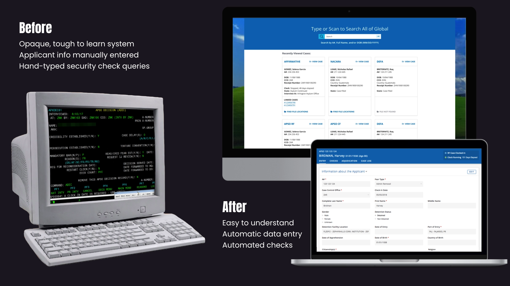
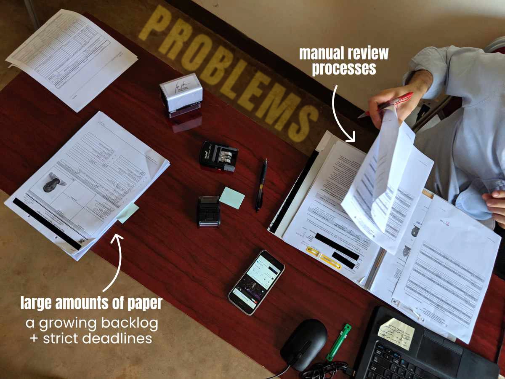
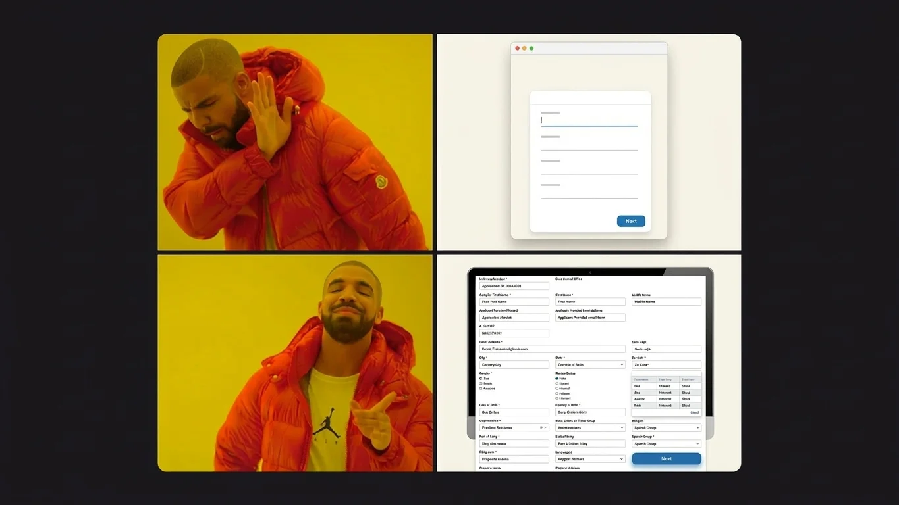
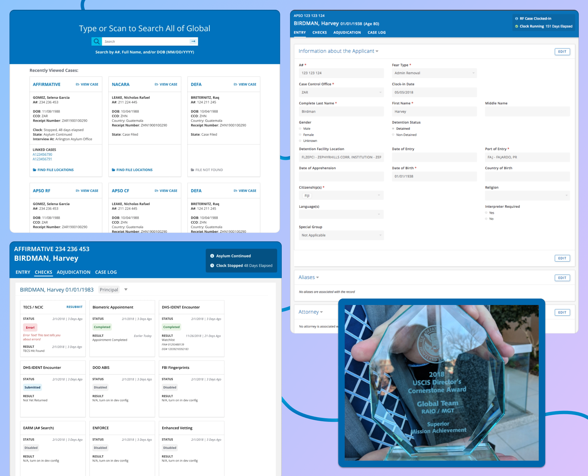

Global Asylum

Mainframe Modernization
It's 2018 and I'm working at United States Citizenship and Immigration Services (USCIS). With over 300,000 cases in the backlog, people seeking asylum spend years waiting for a decision. Cases stall in legal or procedural limbo while many applicants wait in detention. Leadership tasks my team to build a new case management system.
How do we create an app where officers can decide asylum cases faster and *try to* uphold fairness and the law? Take a mainframe system from the 80s and chuck it into the cloud. Establish an intuitive deck of case information cards. Develop flexible design patterns backed by user research. Write new APIs to automate away drudge work, so officers can focus on the applicants.
I was responsible for design, testing, and managing our team's work. Our goal was to cut operating costs and improve security by replacing the old mainframe. One year later, we launched a web app that saved over $10 million a year thanks to user research and automation.



Best Practices Not Always Best
One of our usability tests involved a web form using industry best practices: single-column, many pages. This layout usually makes filling out forms less overwhelming. Turns out this pattern doesn’t work when officers need to review large amounts of information at a glance. We opted for a familiar layout mirroring the paper forms that applicants mail to USCIS.
Since officers needed to see all the information at once to make decisions. We designed a deck of cards that grouped related information together. This design made it easier for officers to find the information they needed and make decisions faster.

Automating Away Drudgery
By talking to users, we learned that their biggest frustrations involved data entry. You know how infuriating it is having to re-type your resume when applying for a job? Well, people at USCIS had to type in all the information from paper forms asylum applicants mailed in. Then they had to retype this information when submitting applicants for security checks.
Our new system automated data entry where possible. We built APIs to automate security check submissions as well. The new system aggregated check results from over eight different law enforcement databases. It also sped up check responses from a matter of days to a matter of minutes.
CHECK RESULTS: DAYS → MINUTES
[ ░░░░░░░░░░░░░░░░░░░░ ] Before: 5 Days
[ █ ] After: 15 Mins